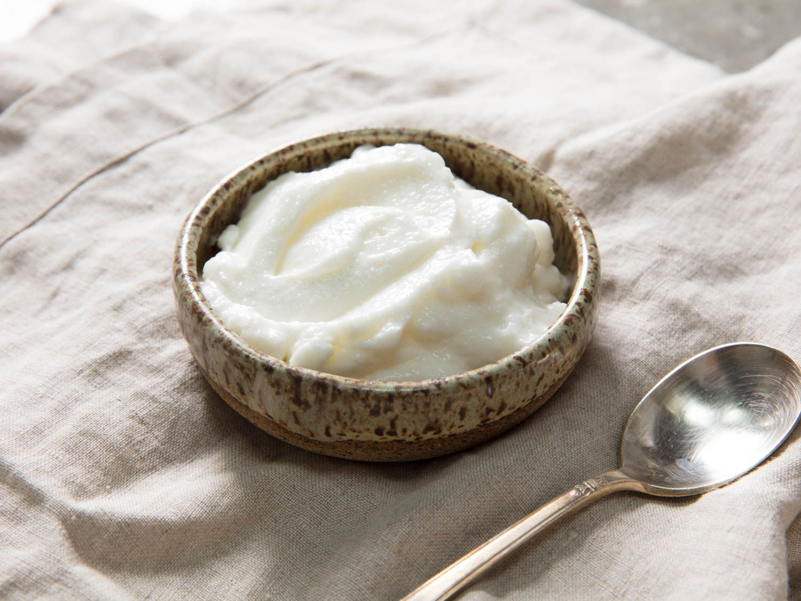

Toum - Garlic Bomb

A delicious bomb of flavour and garlic hitting your tastebuds.
It takes a bit of time, and it takes plenty of patience, to emulsify the oil with the garlic,
but it is so good... but maybe not too healthy...
This is the sort of sauce that is delievered with Lebonese takeout. now you can have a whole big bowl!
Ingredients
- 1c. garlic
- 1/4c. lemon juice
- 1.5c oil
Steps
- Blend garlic and half the lemon juice.
- Slowly add the oil to the blend to begin and maintain the emulsion.
- FInished product with be a white foamy mass that will kick up the flavor of any roasted meat.
home